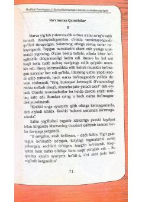

STMurakkab munosabatlar va ichki kechinmalar haqidagi psixologik hikoya.
Ushbu asar Marva va Salim o'rtasidagi murakkab munosabatlar hamda qizning o'z sevgilisiga bo'lgan ishonchsizligi haqida hikoya qiladi. Marva Salimning ofisida ko'rgan shubhali holatlardan so'ng, o'z his-tuyg'ulari va munosabatlaridagi haqiqatni anglashga urinadi.